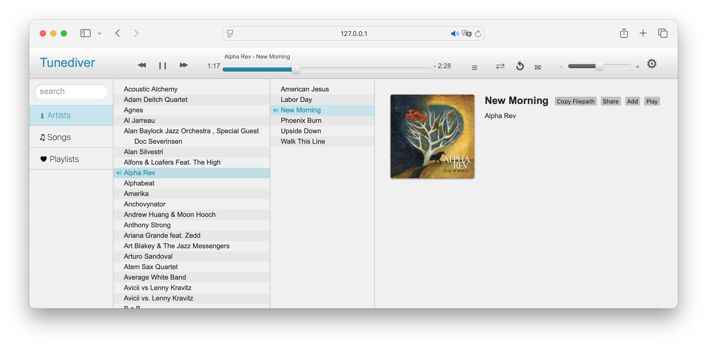

Your music.
Your server.
Your rules.
Tunediver turns your local music collection into a fast, beautiful web player — no cloud, no subscriptions, no tracking. Just your files, the way you organized them.

Built for people who love their music library
Every feature is in service of one idea: you already have great music — playing it should feel great too.
-
Local-first & private
Your files never leave your machine. No account, no telemetry, no "personalized ads." Just audio over your own network.
-
Rich metadata
Reads ID3, Vorbis, MP4, and more. Embedded lyrics and cover art are pulled straight from the file — no scraping, no guesswork.
-
Fuzzy search, keyboard-first
Find anything in two keystrokes. Arrow keys to browse, Enter to play. The whole library opens up without touching a mouse.
-
Dark & light, automatic
Respects your system preference out of the box. Tuned for long listening sessions either way.
-
Every format you own
MP3, M4A, FLAC, WAV, OGG, AAC, AIFF, ALAC, Opus, and more. HTTP range requests mean instant seeking on big lossless files.
-
Free forever, open source
Released under AGPL-3.0. Read the code, fork it, audit it, send a patch. No pricing page, no upsell.
Why Tunediver instead of a streaming service?
Streaming is convenient — until it isn't. Albums disappear, subscriptions creep up, recommendations crowd out your actual taste.
| Feature | Tunediver | Spotify | Apple Music |
|---|---|---|---|
| You own the files | Yes | No | No |
| Works fully offline | Always | Download only | Download only |
| No ads, no tracking | Yes | Paid tier | Paid tier |
| No subscription | Free forever | $11.99/mo | $10.99/mo |
| Open source | AGPL-3.0 | No | No |
| Plays any audio format | FLAC, Opus, MP3, … | Ogg Vorbis / AAC | AAC / ALAC |
| Albums can't be taken away | Yes | No | No |
Running in under a minute
One clone, one make, one browser tab. The full guide lives in the README.
-
1
Clone the repo
git clone https://github.com/ad-si/tunediver.git cd tunediver -
2
Point it at your music
cd server make start-with-path MUSIC_PATH=/path/to/your/music -
3
Open the player
open http://localhost:7313On macOS you can also set up a LaunchAgent so the server starts at login — see the README for the template.
Frequently asked
Which platforms does it run on?
The server is a Rust binary and runs anywhere Rust builds — macOS, Linux, Windows. The web player works in any modern browser. A native Tauri desktop app is scaffolded and on the roadmap.
Which audio formats are supported?
MP3, M4A, FLAC, WAV, OGG, AAC, WMA, AIFF, ALAC, Opus, MP4, M4V, and WebM. Metadata (ID3v2, Vorbis comments, MP4 atoms) and embedded cover art / lyrics are read automatically.
How much disk space do I need?
Only what your own music collection takes up. Tunediver doesn't duplicate or re-encode anything — it streams the original files.
Can I share it with my household?
Yes. Anyone on the same local network can open the server's address in a browser. Expose it beyond your LAN with a reverse proxy (Caddy, nginx, Tailscale, etc.) if you want.
Does it phone home?
No. No analytics, no telemetry, no update pings. The server talks to your browser and your disk — that's it.
How do I keep the server running?
On macOS, a LaunchAgent template is included so Tunediver starts at login and stays up in the background. On Linux, use systemd or your init system of choice.
Open source, by design
Tunediver is released under the AGPL-3.0-or-later. Issues, pull requests, wild ideas — all welcome on GitHub.